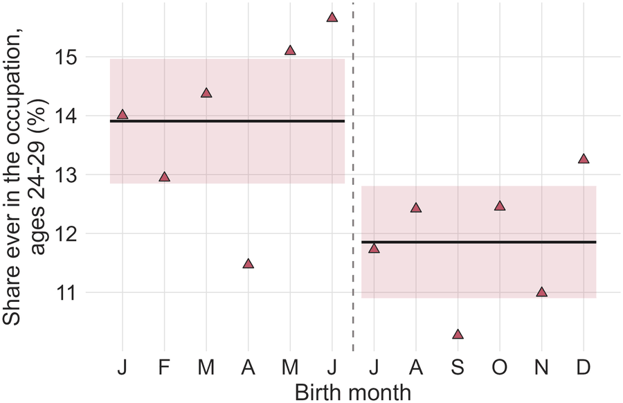
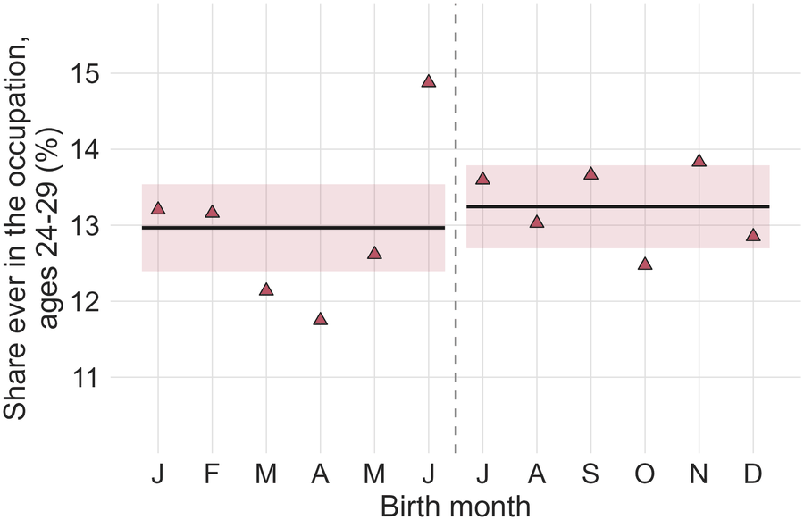

Try Before You Choose: Early Work Experience and Occupational Choice
Occupations shape individuals’ economic and non-economic outcomes, yet young people often choose a field with little knowledge of the work. Can a short work experience, assigned just before individuals choose a career, change their occupational choice? I exploit the suspension of German conscription in 2011 in a difference-in-discontinuities design. Because of the school-entry cutoff, high-track graduates born just before it finished school in time to be drafted into the military or the social alternative service, while those born just after finished a year later, after the last call-up.
The work experience shifts young men towards occupations of the social alternative service, but not towards all of them alike: they move into social work, child care and therapy rather than into nursing or elder care, and mainly into occupations with better working conditions. This shift comes at no detectable cost to education, labor market entry or earnings. Surveys of former participants point to information about occupations as the channel. An early work experience can thus shape occupational choice, even when individuals did not choose it.
Draft available upon request.
Work in occupation related to social alternative service
Treated cohort (before/after abolition of service)

Control cohorts, pooled
